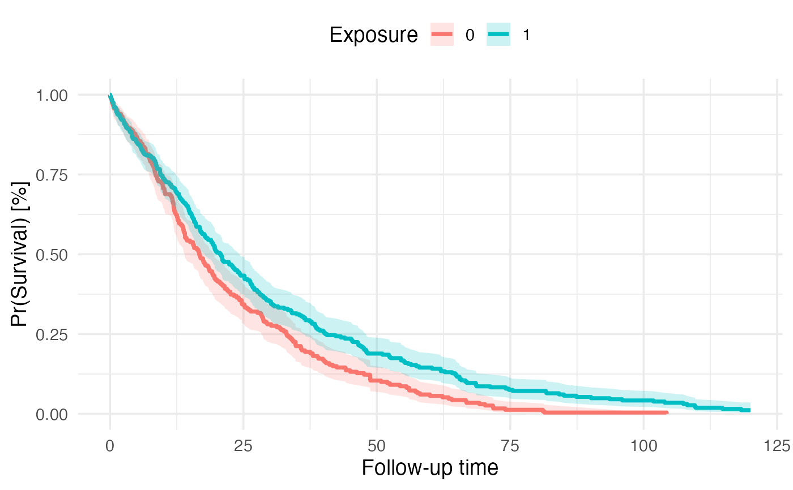

Computes pooled median survival Kaplan-Meier estimates using Rubin's rule and outputs corresponding Kaplan-Meier curve across imputed and matched/weighted datasets
Usage
km_pooling(
x = NULL,
surv_formula = stats::as.formula(survival::Surv(fu_itt_months, death_itt) ~ treat),
times = NULL,
...
)Arguments
- x
The imputed datasets to analyze. One of:
a list of data frames (one per imputed dataset), e.g., the output of
raking_weightsor ofMatchThem::complete(..., action = "all")a weighted (
wimids) or matched (mimids) object created with MatchTheman imputed (
mids) object created with mice
See the section "Input types and default model arguments" for how each input is handled.
- surv_formula
specification of survival model formula to be fitted
- times
numeric vector of follow-up time points at which survival probabilities are to be estimated (propagated to
tidy_survfit). If NULL (default), survival probabilities are estimated and pooled across all observed event times.- ...
Additional arguments passed on to the per-dataset model call (
survfit2forkm_pooling(),coxphforcox_pooling()). They are used in addition to, and take precedence over, the default arguments of the input type (see the section "Input types and default model arguments"). Onlyformulaanddataare set internally and cannot be supplied here. Column names are written without quotes and are looked up in each dataset, e.g.weights = worid = patientid.
Value
list with pooled median survival estimate and pooled Kaplan-Meier curve
km_median_survival:
strata = stratum
t_median = median survival time
t_lower = lower 95% CI of median survival time
t_upper = upper 95% CI of median survival time
km_survival_table:
strata = stratum
time = observed time point
m = number of imputed datasets
qbar = pooled univariate estimate of the complementary log-log transformed survival probabilities \(\log(-\log(1 - S))\), see formula (3.1.2) Rubin (1987)
t = total variance of the pooled univariate estimate of the complementary log-log transformed survival probabilities, formula (3.1.5) Rubin (1987)
se = total standard error of the pooled estimate (derived as sqrt(t))
surv = back-transformed pooled survival probability
lower = Wald-type lower 95% confidence interval of back-transformed pooled survival probability
upper = Wald-type upper 95% confidence interval of back-transformed pooled survival probability
km_plot: ggplot2 object with Kaplan-Meier curve
Details
The function takes the imputed datasets (x) as a list of data frames, or as a
mimids, wimids or mids object (see the sections "Input types and default model arguments" and
"Precedence of arguments in ..." below). The latter are the output of a workflow that requires
imputing multiple (m) datasets using mice or amelia and matching or weighting each imputed dataset
via the MatchThem package (see examples). Weights and clusters of lists of data frames are specified
explicitly via ..., e.g., weights = weights, cluster = subclass.
The function fits the pre-specified survfit model (surv_formula, survfit package)
to compute survival probabilities at each individual time point according to the Kaplan-Meier method.
Survival probabilities can be estimated at all observed event times (default) or at user-specified time points
using the times argument, which is passed directly to tidy_survfit.
Arguments of the survfit call can be supplied via ...,
e.g. type = "fleming-harrington". For matched and weighted datasets (mimids and wimids objects),
weights, cluster membership (matching only) and robust variance estimates are considered
by default. ... only affects the underlying Kaplan-Meier fit of each imputed dataset;
the complementary log-log transformation, Rubin's rule pooling and confidence interval
computation are unaffected.
Since survival probabilities typically don't follow normal distributions,
these need to be transformed to approximate normality first before pooling
across imputed datasets and time points. To that end, the method of Morisot et al. (2015) is
implemented, who applied Rubin's rules after a complementary log-log transformation of the
survival probabilities, following the recommendation of Marshall et al. (2009) to combine
predicted survival probabilities after this transformation. In each imputed dataset
i and at each time point t, the survival probability \(S_i(t)\) is transformed to
$$Q_i(t) = \log(-\log(1 - S_i(t)))$$
and the corresponding within-dataset variance is derived from the variance of the survival
probability (the squared standard error reported by survfit) with the delta method:
$$U_i(t) = \frac{Var[S_i(t)]}{\left[(1 - S_i(t)) \log(1 - S_i(t))\right]^2}$$
Note that the complementary log-log transformation is applied to the survival probability
\(S\) itself, as in Morisot et al. (2015). This is not the same transformation as the
\(\log(-\log(S))\) used for the confidence intervals of survfit
with conf.type = "log-log". For a single dataset, the point estimates and standard errors
therefore agree with survfit, but the confidence intervals differ slightly.
To pool the transformed estimates across imputed datasets and time points, the pool.scalar
function is used to apply Rubin's rule to combine pooled estimates (qbar) according to
formula (3.1.2) Rubin (1987) and to compute the corresponding total variance (t) of the pooled
estimate according to formula (3.1.5) Rubin (1987), i.e.,
\(T = \bar{U} + (1 + 1/m) B\) with the average within-dataset variance \(\bar{U}\) and
the between-dataset variance \(B\) (as in Morisot et al. (2015)). If only a single dataset is supplied (m = 1, e.g., complete
data without imputation), the between-imputation variance is 0 by definition, the total variance equals the
within-dataset variance and a warning is raised. When times = NULL, the pooling is performed
at each unique combination of event times across all imputed datasets. When specific time points are provided
via the times argument, pooling occurs only at those pre-specified time points, ensuring consistency
across datasets and facilitating comparison at clinically relevant follow-up intervals.
The pooled survival probabilities are then back-transformed via 1-exp(-exp(qbar))
for pooled survival probability estimates and 1-exp(-exp(qbar +/- 1.96*sqrt(t)))
for lower and upper 95% confidence intervals. As the formula indicates, the pooled standard
error is computed as the square root of the total variance. The vertically stacked table
with transformed and backtransformed estimates is returned with the
km_survival_table table.
Special scenarios during the transformation, pooling and backtransformation are
considered. By convention, Kaplan-Meier survival curves start at time = 0 with survival probability = 1
unless a delayed entry survival model is fitted (not supported yet). In the case that there is no
observation in the data at at time = 0 with survival probability = 1, the tidy_survfit
extrapolates this across strata. For the complementary log-log transformation this means, that survival probabilities = 1
at time = 0 and corresponding confidence intervals are extrapolated to 1. If the survival proability reaches exactly 0,
the survival probability and corresponding confidence intervals are set to 0 as well.
Finally, the median survival time is extracted from the km_survival_table table
by determining the time the survival probability drops below .5 for the first time.
For this a sub-function of Terry M. Therneau's print.survfit function
is used. Therneau also considers some edge cases/nuisances (x = time, y = surv):
Nuisance 1: if one of the y's is exactly .5, we want the mean of the corresponding x and the first x for which y<.5. We need to use the equivalent of all.equal to check for a .5 however: survfit(Surv(1:100)~1) gives a value of .5 + 1.1e-16 due to roundoff error.
Nuisance 2: there may by an NA in the y's
Nuisance 3: if no y's are <=.5, then we should return NA
Nuisance 4: the obs (or many) after the .5 may be censored, giving a stretch of values = .5 +- epsilon
Important Gotcha: When using the times argument to specify custom time points, ensure that
sufficient time points are requested to capture the range of interest. If too few time points are specified,
the km_median_survival estimates and km_plot may not represent the true survival trajectory.
Specifically, if the median survival time lies between two requested time points or if requested time points
do not adequately cover the follow-up period, the median survival estimates will be inaccurate or return NA.
Similarly, the Kaplan-Meier curve will appear sparse or disconnected. For most applications, using the default
times = NULL is recommended to automatically use all observed event times. If using custom time points,
ensure they are sufficiently granular to capture the survival dynamics of interest.
The function follows the following logic:
Fit Kaplan-Meier survival function to each imputed and matched/weighted dataset
Transform survival probabilities using complementary log-log transformation
Pool transformed survival probabilities and compute total variance using Rubin's rule
Back-transform pooled survival probabilities and compute 95% confidence intervals
Extract median survival time and corresponding 95% confidence intervals
Plot Kaplan-Meier curve with pooled survival probabilities and confidence intervals
More references:
https://stefvanbuuren.name/fimd/sec-pooling.html
Input types and default model arguments
The datasets are first brought into the form of a list of data frames. Depending on the type of
x, default model arguments are set:
Input x | How the datasets are obtained | weights | cluster |
wimids | MatchThem::complete(x, action = "all", all = FALSE, include = FALSE) | weights | none |
mimids | same as wimids | weights | subclass |
mids | mice::complete(x, action = "all", include = FALSE) | none (unweighted) | none |
| list of data frames | used as supplied | none | none |
Lists of data frames are never interpreted automatically. A list can come from many sources
(weighting, matching, raking, your own code) so the function cannot know which columns are meant
as weights or clusters. You state this explicitly through ..., for example:
weighted data:
weights = weightsmatched data:
weights = weights, cluster = subclassweights stored in a column with another name:
weights = w
If the datasets contain a column named weights or subclass that is not used
because no weights or cluster (or id) argument was specified, a warning
is raised that names the argument to add. Specify weights = NULL or cluster = NULL
to confirm that the column should deliberately be ignored.
Important: when you build the list from a mimids or wimids object yourself,
use MatchThem::complete(x, action = "all", all = FALSE, include = FALSE). With
all = TRUE, unmatched patients and patients with zero weight are included in the models.
Precedence of arguments in ...
Default arguments of the input type are applied first, then the arguments you supply via
.... If both contain the same argument, your argument wins. For example, for a
mimids object cluster = NULL fits the model without clustering on the matched sets
and cluster = pair_id clusters on another column. formula and data are the only
reserved arguments.
robust is set automatically: unless you specify it, robust = TRUE is used whenever
weights, a cluster or an id are part of the model (the model-based variance is not valid in these
cases), otherwise the default of the model function is kept. An explicitly supplied robust
always takes precedence.
Transparency
Every call prints a message that lists how the datasets were obtained and exactly which
arguments were used for the models, including where each argument comes from (default for the
input type, derived, or specified by you). Use suppressMessages() to silence it.
References
Morisot A, Bessaoud F, Landais P, et al. Prostate cancer: net survival and cause-specific survival rates after multiple imputation. BMC Med Res Methodol. 2015;15:54. doi:10.1186/s12874-015-0048-4
Marshall A, Altman DG, Holder RL, Royston P. Combining estimates of interest in prognostic modelling studies after multiple imputation: current practice and guidelines. BMC Med Res Methodol. 2009;9:57. doi:10.1186/1471-2288-9-57
Rubin DB. Multiple Imputation for Nonresponse in Surveys. Wiley; 1987.
Examples
library(encore.analytics)
library(mice)
library(MatchThem)
# simulate a cohort with 500 patients with 20% missing data
data <- simulate_data(
n = 500,
imposeNA = TRUE,
propNA = 0.2
)
# impute the data
set.seed(42)
mids <- mice(data, m = 5, print = FALSE)
#> Warning: Number of logged events: 765
# fit a propensity score model
fit <- as.formula(treat ~ dem_age_index_cont + dem_sex_cont + c_smoking_history)
# weight (or alternatively match) patients within each imputed dataset
wimids <- weightthem(
formula = fit,
datasets = mids,
approach = "within",
method = "glm",
estimand = "ATO"
)
#> Estimating weights | dataset: #1
#> #2
#> #3
#> #4
#> #5
#>
# fit a survival model
km_fit <- as.formula(survival::Surv(fu_itt_months, death_itt) ~ treat)
# 1) weighted (wimids) or matched (mimids) object:
# weights (and clusters) are set automatically
km_out <- km_pooling(
x = wimids,
surv_formula = km_fit
)
#> ℹ Input: <wimids>: weighted datasets extracted with MatchThem::complete(action
#> = "all", all = FALSE, include = FALSE) (m = 5)
#> ℹ Fitting Kaplan-Meier survival function with ggsurvfit::survfit2() in each
#> dataset:
#> formula: survival::Surv(fu_itt_months, death_itt) ~ treat
#> weights = weights (default for the input type)
#> robust = TRUE (derived: weights, cluster or id are used)
# median survival time
km_out$km_median_survival
#> # A tibble: 2 × 4
#> strata t_median t_lower t_upper
#> <fct> <dbl> <dbl> <dbl>
#> 1 0 16.8 14.0 19.6
#> 2 1 20.7 17.8 24.3
# KM curve
km_out$km_plot

# 2) list of data frames: weights are specified explicitly via `...`
# (all = FALSE excludes observations with zero weight)
datasets <- MatchThem::complete(wimids, action = "all", all = FALSE, include = FALSE)
km_out_list <- km_pooling(
x = datasets,
surv_formula = km_fit,
weights = weights
)
#> ℹ Input: list of data frames supplied by the user; no weights or cluster
#> applied automatically (m = 5)
#> ℹ Fitting Kaplan-Meier survival function with ggsurvfit::survfit2() in each
#> dataset:
#> formula: survival::Surv(fu_itt_months, death_itt) ~ treat
#> weights = weights (specified by you)
#> robust = TRUE (derived: weights, cluster or id are used)
# for matched datasets, additionally specify the matched sets as clusters:
# km_pooling(x = datasets, surv_formula = km_fit, weights = weights, cluster = subclass)
# weights stored in a column with another name, e.g., `w`
datasets_w <- lapply(datasets, function(d) dplyr::rename(d, w = weights))
km_out_w <- km_pooling(
x = datasets_w,
surv_formula = km_fit,
weights = w
)
#> ℹ Input: list of data frames supplied by the user; no weights or cluster
#> applied automatically (m = 5)
#> ℹ Fitting Kaplan-Meier survival function with ggsurvfit::survfit2() in each
#> dataset:
#> formula: survival::Surv(fu_itt_months, death_itt) ~ treat
#> weights = w (specified by you)
#> robust = TRUE (derived: weights, cluster or id are used)
# 3) imputed (mids) object: unweighted Kaplan-Meier curve
km_out_mids <- km_pooling(
x = mids,
surv_formula = km_fit
)
#> ℹ Input: <mids>: imputed datasets extracted with mice::complete(action = "all",
#> include = FALSE); unweighted (m = 5)
#> ℹ Fitting Kaplan-Meier survival function with ggsurvfit::survfit2() in each
#> dataset:
#> formula: survival::Surv(fu_itt_months, death_itt) ~ treat
#> no weights, cluster or other arguments used
# 4) pass additional arguments to the underlying survfit2() call:
# column names are resolved in each imputed dataset, e.g. `id = patientid`.
# survfit() uses `id` as the subject identifier for its robust/sandwich
# variance calculation, clustering rows by patient instead of treating
# each row as its own independent cluster (relevant if a patient can
# contribute more than one row, e.g. with time-varying covariates).
km_out_id <- km_pooling(
x = wimids,
surv_formula = km_fit,
id = patientid
)
#> ℹ Input: <wimids>: weighted datasets extracted with MatchThem::complete(action
#> = "all", all = FALSE, include = FALSE) (m = 5)
#> ℹ Fitting Kaplan-Meier survival function with ggsurvfit::survfit2() in each
#> dataset:
#> formula: survival::Surv(fu_itt_months, death_itt) ~ treat
#> weights = weights (default for the input type)
#> id = patientid (specified by you)
#> robust = TRUE (derived: weights, cluster or id are used)